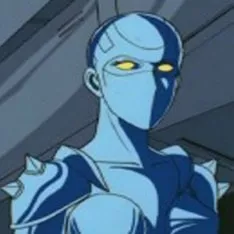

Cobra
Dans un monde futuriste au cours d'une séance de rêve artificiel, un homme nommé Johnson retrouve la mémoire : il découvre qu'il est en réalité le mythique aventurier de l'espace (supposé mort) dénommé Cobra. Il s'aperçoit ensuite que son bras gauche dissimule un dispositif redoutable, le « rayon Delta » (ou Psychogun), une arme qu'il est le seul à posséder.
Après avoir retrouvé son identité (mais ayant une nouvelle apparence, car il s'est fait modifier le visage), Cobra décide qu'il est temps pour lui de reprendre sa vie de corsaire de l'espace recherché par la Police galactique et les Pirates de l'espace. Aux côtés d'Armanoïde, sa fidèle coéquipière androïde à la personnalité et allure féminine, il parcourt l'espace à bord de son vaisseau spatial, l'un des plus rapides de la galaxie, en quête d'aventures, de richesses et de conquêtes féminines (son activité favorite).
Au fil de ses nombreuses aventures, Cobra sera notamment confronté à ses anciens ennemis, les Pirates de l'espace — avec à leur tête le mystérieux Homme de verre, puis Salamandar, il tentera de retrouver le fabuleux trésor du capitaine Nelson (légué par ce dernier à ses trois ravissantes filles) et disputera une partie effrénée de Rugball2 (un mélange ultra-violent de baseball et de football américain) pour démasquer les activités d'un criminel.
Cobra
Ce corsaire de l'espace, au sens de l'honneur très developpé et doté d'un grand respect pour la vie humaine, est probablement l'homme à la tête la plus mise à prix de toute la galaxie.
Mais un beau jour, lassé de cette vie aventureuse, il décide de vider complètement sa mémoire et se transforme le visage afin de mener une vie normale.
Il disparaît ensuite sans laisser de traces, et tout le monde le croit mort...
Cobra dissimule sous son bras gauche le puissant psychogun (Rayon delta) qui est une arme à énergie de haute puissance.
Armanoïde
Armanoïde est la partenaire légendaire de Cobra, c'est un robot mais elle possède une part de la femme qu'elle fut autrefois, en effet elle s'appelait Esmeralda et était princesse du royaume de Sanborn.
Malgré son apparence son corps est très résistant (notamment aux différentes armes lasers), elle est toujours prête à se sacrifier pour sauver Cobra, elle le démontrera à plusieurs reprises.
Dominique Royal
Dominique est l'une des trois filles du capitaine Nelson.
Elle possède comme ses deux soeurs un tatouage dans le dos indiquant l'énorme trèsor de le père.
A la fin de l'animé c'est la seule sœur qui survie aux pirates de l'espace.
Les Pirates de l'Espace
| Nom du pirate | Pouvoir | Image |
|---|---|---|
| L'Homme de Verre | Corps en verre indestructible numi d'un crochet | |
| Zahora | Capacité de changer sa structure moléculaire | |
| Sandra | Pas de pouvoir | |
| Tarbeige | Homme plante qui peut implanter une graine dans l'esprit et en prendre le controle | |
| Joe Hammerbolt | Ses poings peuvent se détacher de son corps | |
| Salamandar | Son esprit peut quitter son corps |